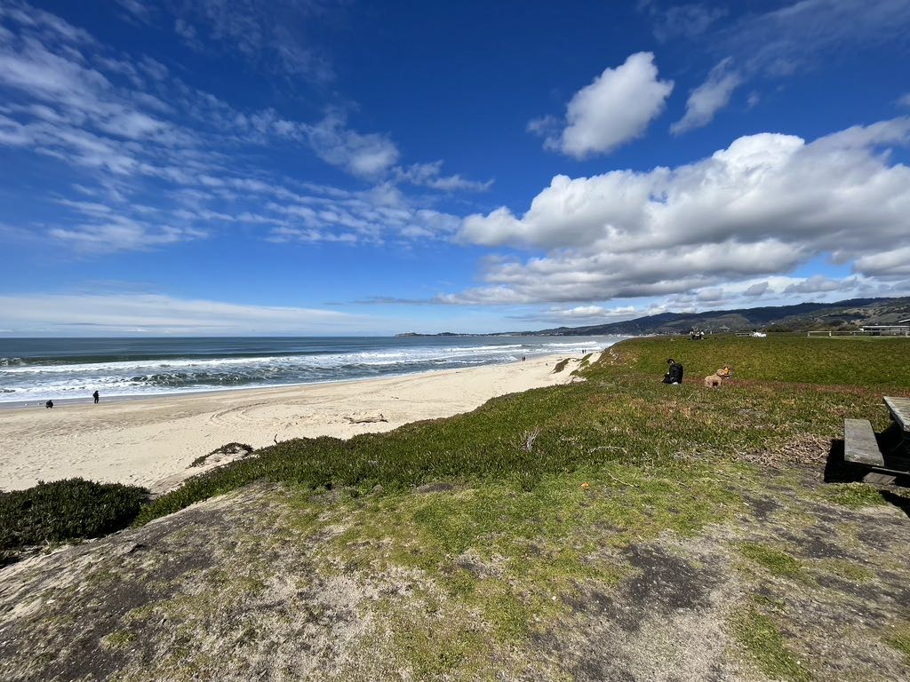
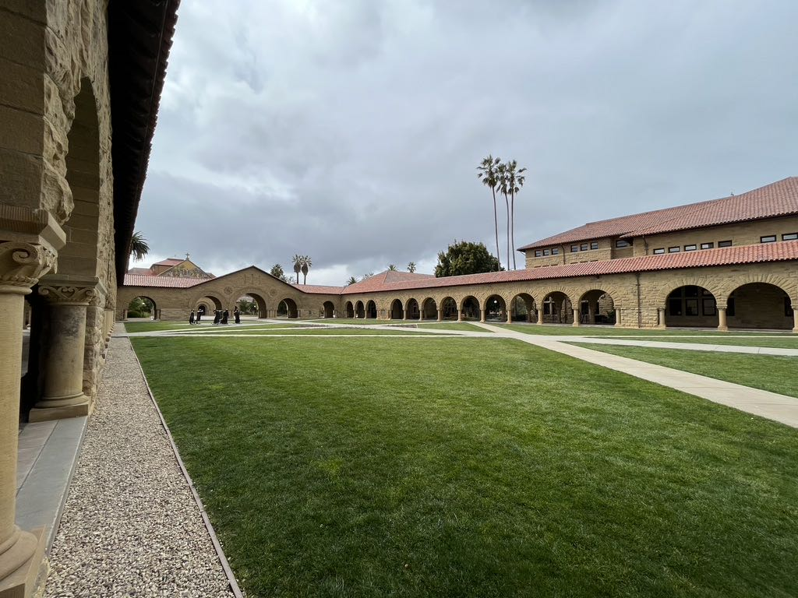
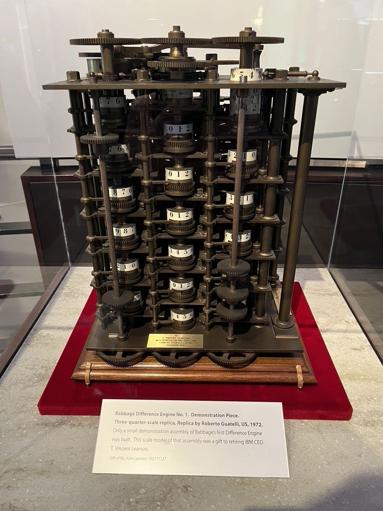
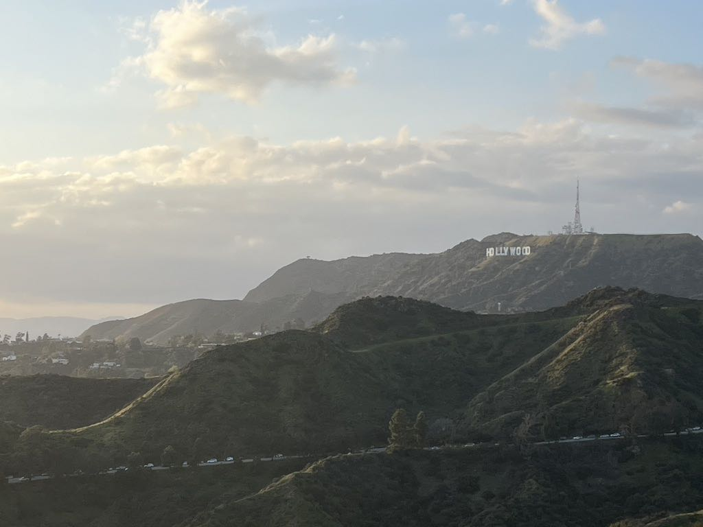
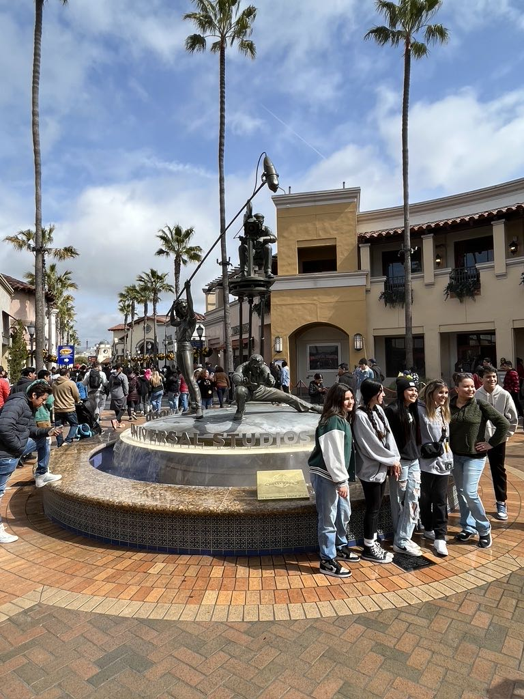

美国出差日记 - 2月
2.23 出境的时候被关小黑屋，当了差不多半个多小时。最后结果是海关依然对我入境动机持有怀疑态度，但是还是让我可以在境内待上3个月。吃饭和开车是最先需要习惯的问题。
2.24 第一天去上班，时差还没有倒过来，下午5点多有点想睡觉。晚上去斯坦福shopping center附近吃了shake & shack, 完了在附近的沃尔玛买了点食物补给以及牙膏。
2.25 沿着1号公路走了一下The Half Moon Bay, Pigeon Points, Lover Points(at Monterey), Big Sur. 中途的时候试着去自己加油，插卡提枪加油就好了。

2.26 今天天气不好。早起跑了10km，去了FB HQ看了下，离我住的anton menlo park比较近。上午开车去Stanford U看了一下，我们停在visitor center然后开始转，主要景色就是在hoover tower, the oval, main quad, memorial church这几个地方，我自己在里面也开车了一段路程，然后就是到shopping center吃饭。下午去apple park只能在外围转转，然后去了computer history museum.


2.27 ~ 3.3 上班
3.4 早上起来做飞机去LAX，差点就赶不上了，检票安检大约40分钟就搞定了，比国内的速度要快。上午打车去Venice Beach走到了St Monica Beach, 接着做Metro到了City Hall附近看看，然后就打车去了Hollywood City Inn入住下来。下午打车去Griffith天文台转了一下，看到了HollyWood的牌子，晚上去星光大道转转。一天下来走了接近3万步，腿快要断了。

3.5 早起打车到了Universal Studio. 里面很大，很多游玩项目有需要排队。排队10min看了Panda KongFu Show, 排队30min坐了Mummy Ride过山车，排队两趟(20min/40min)转了两次Studio Tour. 打车回到了LAX等飞机，已经晚点了2次到了9:55PM….不知道几点能回去。

3.6 ~ 3.10 上班